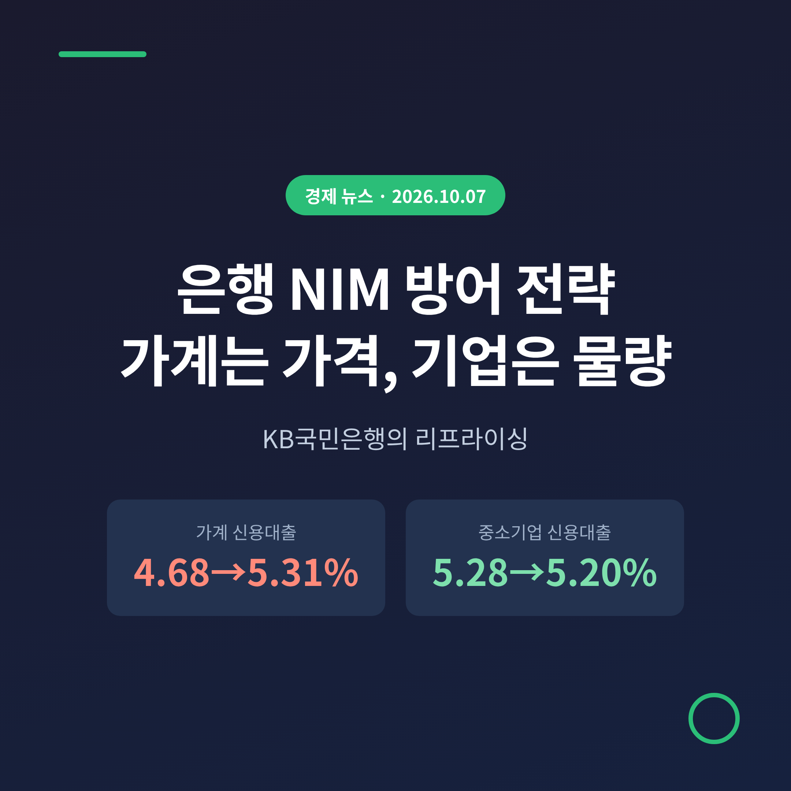
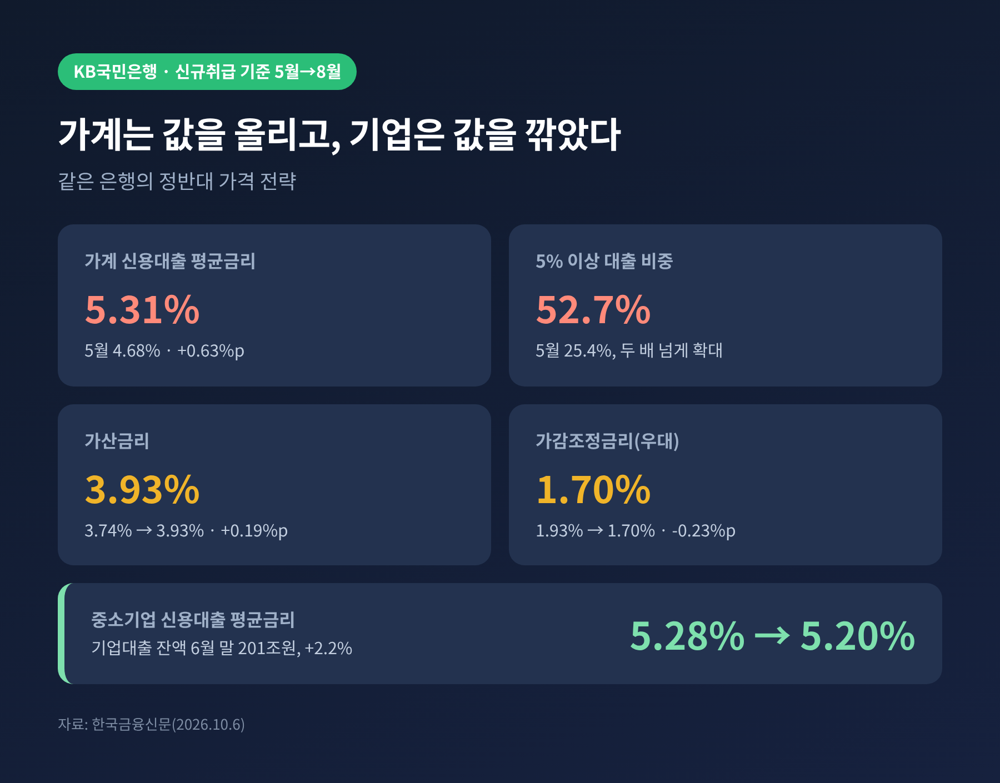
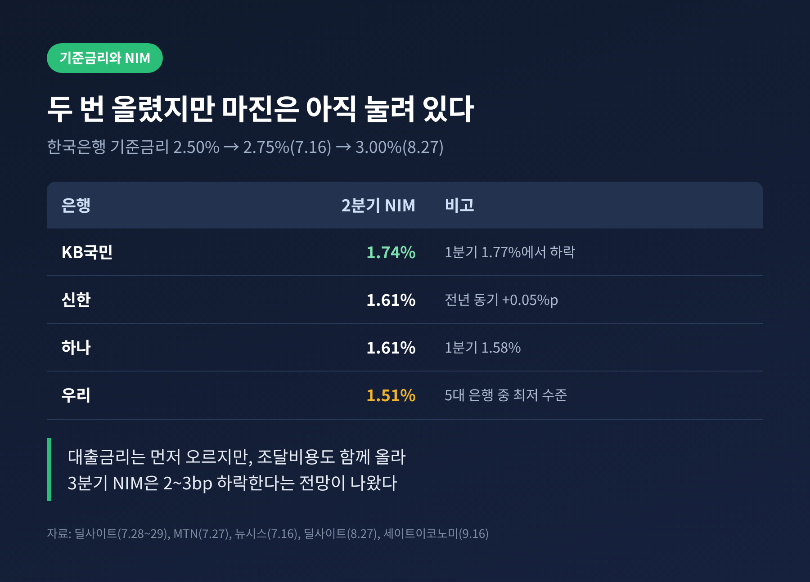
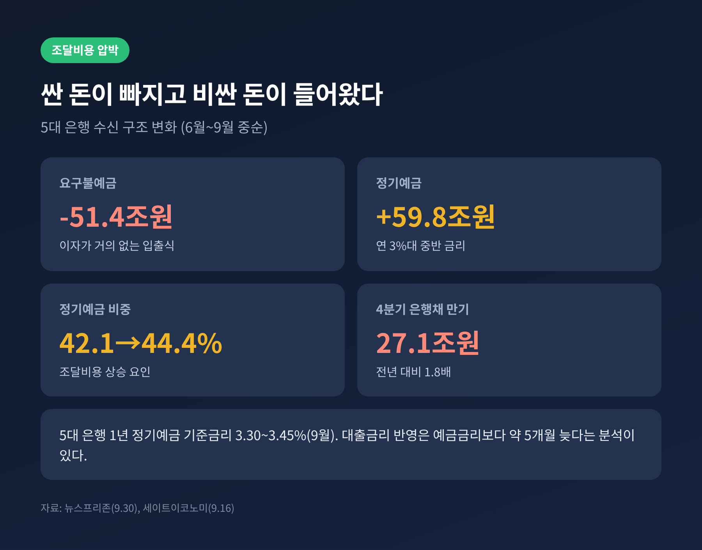
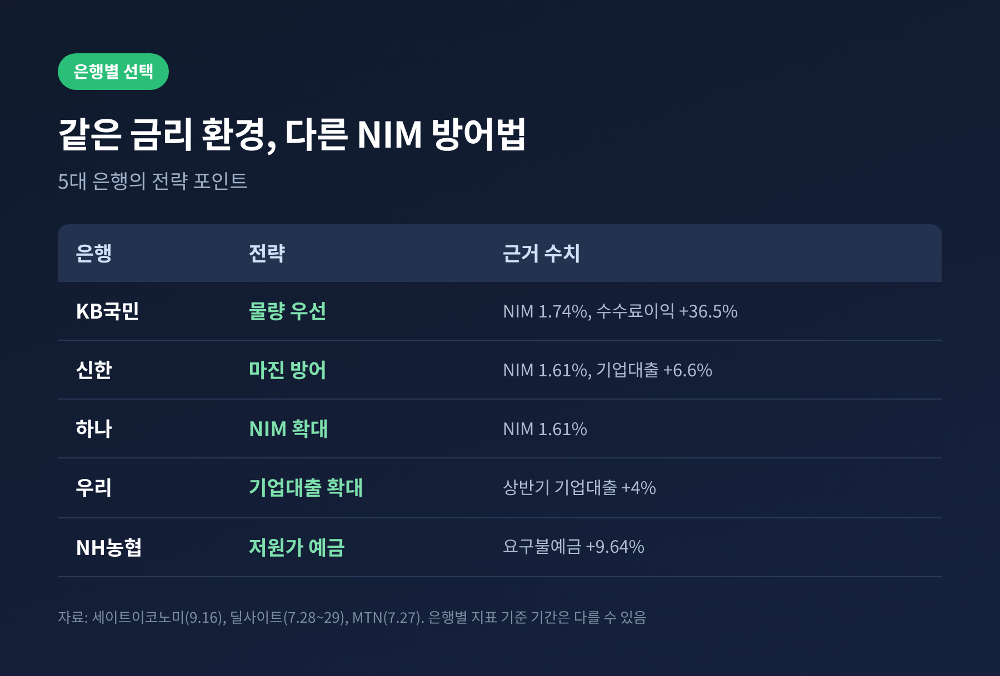
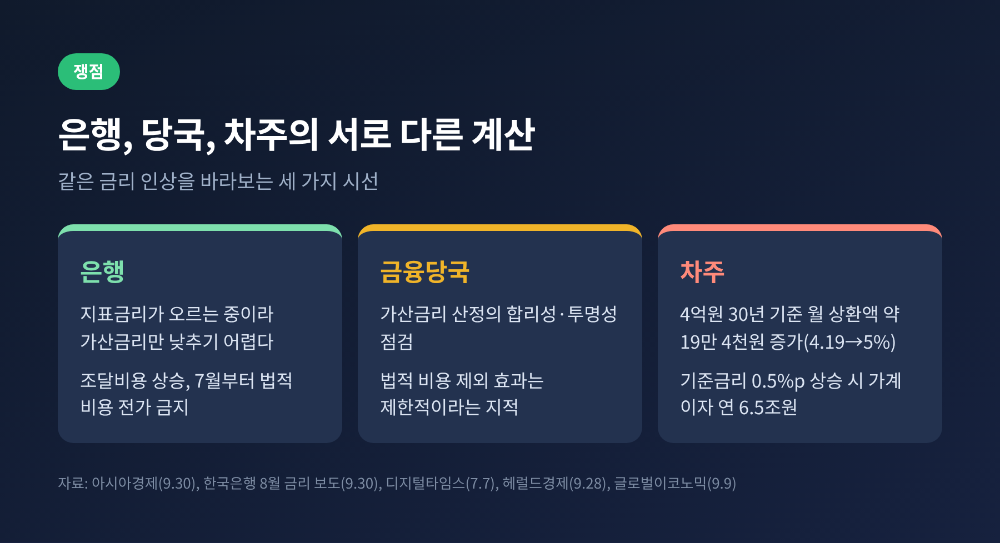

은행 NIM 방어 전략, 가계대출 금리 올리고 기업대출은 낮췄다

이번 글에서는 기준금리 인상기에 시중은행이 순이자마진(NIM)을 지키려고 어떤 방식으로 대출 금리를 다시 매기고 있는지 정리해 보겠습니다. 한국금융신문이 10월 6일 전한 KB국민은행 사례를 중심으로, 한국은행 금리 경로와 다른 은행의 선택, 당국과 차주의 시선까지 함께 살펴봅니다. 핵심은 한 줄입니다. 가계에는 '가격'을, 기업에는 '물량'을 내세웠다는 점입니다.
무슨 일이 있었나: 가계는 가격, 기업은 물량
한국금융신문 보도에 따르면 KB국민은행의 가계 신용대출 신규취급 평균금리는 5월 4.68%에서 8월 5.31%로 0.63%포인트 올랐습니다. 석 달 만에 이만큼 움직였습니다. 금리 5% 이상 대출이 차지하는 비중은 25.4%에서 52.7%로 두 배 넘게 커졌습니다. 신규 가계 신용대출의 절반 이상이 5%를 넘는 구조로 바뀐 셈입니다.
기업 쪽은 반대 방향입니다. 중소기업 신용대출 평균금리는 같은 기간 5.28%에서 5.20%로 0.08%포인트 내렸습니다. 금리를 양보하는 대신 물량을 늘렸고, 기업대출 잔액은 6월 말 201조원으로 2.2% 증가했습니다.

같은 은행이 한쪽에서는 값을 올리고 다른 쪽에서는 값을 깎았습니다. 서로 모순처럼 보이지만, NIM이라는 하나의 목표로 묶어 보면 설명이 됩니다.
금리 구성을 열어 보면 보이는 것
흥미로운 대목은 금리가 오른 이유입니다. 차주의 신용도가 나빠져서가 아니라는 것이 보도의 분석입니다. 신용점수 구간별 상승폭을 보면 951~1000점대가 0.57%포인트, 801~850점대가 0.74%포인트로 최고 신용층도 크게 올랐습니다.
금리를 구성하는 항목을 나눠 보면 더 분명해집니다. 가산금리는 3.74%에서 3.93%로 0.19%포인트 높아졌습니다. 반면 우대 성격이 강한 가감조정금리는 1.93%에서 1.70%로 0.23%포인트 줄었습니다. 가산은 얹고 우대는 거둔 것입니다. 기준이 되는 시장금리 상승분 위에 은행이 직접 조정할 수 있는 부분을 함께 움직였다는 뜻으로 읽힙니다.
왜 중요한가: 기준금리가 올라도 NIM은 바로 오르지 않는다
배경에는 한국은행의 긴축 전환이 있습니다. 한은은 7월 16일 기준금리를 2.50%에서 2.75%로 올렸습니다. 3년 6개월 만의 인상이었고 금통위원 전원이 찬성했습니다. 8월 27일에는 3.00%로 한 번 더 올렸습니다. 물가 상승, 성장률 전망 상향(2.6%에서 3.3%), 가계대출 증가가 이유로 꼽혔습니다.
예전에는 기준금리가 오르면 은행 수익이 자동으로 늘어난다고 여겼습니다. 지금은 사정이 다릅니다. 대출금리는 빨리 오르지만 예금 쪽 조달비용이 함께, 때로는 더 빨리 오르기 때문입니다. 2분기 NIM은 KB국민 1.74%, 신한 1.61%, 하나 1.61%, 우리 1.51%였습니다. KB국민은 1분기 1.77%에서 0.03%포인트 내려앉았습니다. 한국금융신문은 이를 선제적 자금 조달 영향으로 설명하면서, 3분기부터 가계 리프라이싱 효과가 반영될 것으로 내다봤습니다.

쟁점 하나: 조달비용이 먼저 오른다
NIM 방어가 급해진 이유는 예금 구조의 변화에 있습니다. 뉴스프리존 분석으로는 6월부터 9월 중순까지 요구불예금이 51조 4,000억원 빠져나갔고, 정기예금은 59조 8,000억원 늘었습니다. 이자가 거의 없는 입출식 예금이 떠난 자리를 연 3%대 중반의 정기예금이 채운 것입니다. 5대 은행의 1년 만기 정기예금 기준금리는 9월에 3.30~3.45%까지 올랐습니다.
여기에 4분기에는 만기가 돌아오는 은행채가 27조 1,000억원으로, 1년 전의 1.8배에 이릅니다. 새로 돈을 빌려 갚으려면 더 높은 금리를 감수해야 합니다. 대출금리가 예금금리를 따라가는 데 약 5개월 걸린다는 분석도 함께 나왔습니다. 조달 비용은 먼저 오르고 대출금리 반영은 늦으니, 초기에는 마진이 눌립니다.

그래서 은행은 두 갈래 길을 택합니다. 올릴 수 있는 곳에서는 가격을 올리고, 가격을 올리기 어려운 곳에서는 물량으로 이자이익 총량을 지킵니다. 가계 신용대출과 기업대출을 달리 다룬 KB국민은행의 전략이 바로 그 구조입니다.
쟁점 둘: 다른 은행은 어떻게 하고 있나
전략은 은행마다 결이 다릅니다. 세이트이코노미는 5대 은행을 이렇게 구분했습니다. KB국민은 물량 우선, 신한은 마진 방어, 하나는 NIM 확대, 우리는 기업대출 확대, NH농협은 저원가성 예금 확보입니다.
신한은행은 상반기 순이익 2조 4,600억원으로 KB국민(2조 2,300억원)을 앞섰고, 2분기 NIM은 1.61%로 전년 동기보다 0.05%포인트 높았습니다. 강영홍 CFO는 추가 금리 인상 시 하반기 NIM이 3~4bp 개선될 수 있다고 밝혔습니다. KB국민은행은 같은 기간 순수수료이익이 36.5% 늘어난 7,808억원으로, ETF 판매 확대에 힘입어 NIM 하락 부담을 메웠습니다. MTN은 고정금리 대출 비중이 높아 시장금리 상승 효과가 경쟁사보다 늦게 나타났다고 분석했습니다.

쟁점 셋: 은행, 당국, 차주의 서로 다른 계산
세 주체의 입장은 엇갈립니다.
은행은 시장금리 탓을 앞세웁니다. 한 은행권 관계자는 가산금리를 낮추려 노력하지만 지표금리가 무섭게 오르고 있어 억누르기 어렵다고 말했습니다. 한은 관계자도 9월 22일까지 시장금리가 약 0.2%포인트 올라 대출금리가 더 오를 수 있다고 내다봤습니다. 수익성 측면에서도 부담이 있습니다. 7월 1일부터는 지급준비금과 예금보험료 같은 법적 비용을 대출금리에 얹을 수 없게 됐고, 대형 은행의 연간 이익이 2조원 이상 줄 수 있다는 분석이 나왔습니다.
금융당국은 금리 산정의 투명성을 들여다봅니다. 법적 비용 전가 금지의 취지는 차주 부담 완화였습니다. 다만 실제 효과는 제한적이라는 지적이 따릅니다. 시행 직후 변동형 주담대 하단은 0.05%포인트 내렸지만 고정형 하단은 0.26%포인트 올랐습니다. 서지용 상명대 교수는 우대금리 축소나 수수료 조정으로 이익을 지킬 수 있어 인하 효과가 미미할 수 있다고 짚었습니다. 가계대출 관리 기조 속에서 가산금리를 올렸다는 설명도 있습니다.
차주는 직접 비용을 집니다. 4억원을 30년 원리금균등으로 빌릴 때 연 4.19%에서는 월 195만 3,000원, 연 5%에서는 214만 7,000원이 듭니다. 한 달에 약 19만 4,000원이 늘어납니다. 한은 자료를 바탕으로 한 분석에서는 기준금리가 0.5%포인트 오르면 가계의 연간 이자가 6조 5,000억원 늘어나고, 이 가운데 중·저소득층 몫이 2조 3,000억원입니다.

균형 있게 보려면 이 점을 함께 두어야 합니다. 은행의 가격 조정은 조달비용 상승이라는 현실에서 나왔습니다. 그러나 최고 신용 구간까지 금리가 오르는 만큼, 차주가 그 근거를 확인할 수 있어야 한다는 요구도 정당합니다.
전망: 3분기는 숨 고르기, 반등은 시차에 달렸다
시각은 갈립니다. 뉴스프리존은 3분기 은행 NIM 하락폭이 예상보다 클 수 있다고 봅니다. 특판 예금이 7월 42조원, 8월 20조원 늘었고, 중소기업 대출금리는 4.38%에서 4.22%로 내려왔습니다. 다만 대출이 1.5% 넘게 늘어 순이자이익은 분기 대비 유지될 것이라는 전망입니다. 반면 KB증권은 신한지주의 3분기 NIM을 1.56%로 5bp 낮게 예상하면서도, 일시적 현상이며 7~8월 인상분이 시차를 두고 대출금리에 반영돼 내년 상승 흐름이 이어진다고 내다봤습니다.
점검할 변수는 세 가지입니다. 하나는 10월 22일 금통위입니다. 8월 점도표는 6개월 내 한두 차례 추가 인상을 시사했지만, 신현성 총재는 네 번의 회의 중 한 번 정도로 속도를 설명해 시장은 완만한 경로로 받아들였습니다. 다른 하나는 가계대출 한도입니다. 대형 은행의 가계대출 잔여 한도가 약 2,000억원까지 줄었다는 보도가 있어, 가격 인상만으로 늘릴 수 있는 이자이익에는 한계가 있습니다. 마지막은 중소기업 대출 경쟁입니다. 가격을 양보한 물량이 부실로 이어지지 않는지 건전성을 함께 봐야 합니다.
마지막으로 한 가지만 덧붙이겠습니다. 은행의 선택은 '누구에게 값을 받고, 누구에게 값을 깎아 주느냐'의 문제입니다. 3분기 실적이 공개되면, 가계에서 올린 값이 NIM으로 얼마나 돌아왔는지 숫자로 확인될 것입니다.
※ 본 글은 공개된 보도와 통계를 정리한 정보 제공용 해설이며, 특정 금융상품·종목의 매수나 대출 선택을 권유하는 투자 권유가 아닙니다. 수치는 각 매체 보도를 근거로 했고, 통계 기준(은행 단독 신규취급액, 한국은행 전체 은행 집계 등)이 서로 다를 수 있습니다.